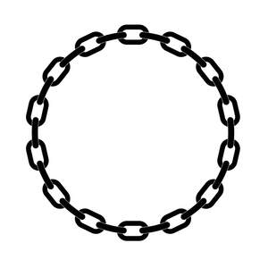

Trade Mark Journal No.2025/045 7 November 2025
UK00004285664 29 October 2025 (25)

- Class 25
- Clothing; Jackets [clothing]; Knitwear [clothing]; Ready-to-wear clothing; Woolen clothing; Furs [clothing]; Headbands for clothing; Gloves [clothing]; Gloves as clothing; Clothes; Aprons [clothing]; Jerseys [clothing]; Denims [clothing]; Shorts [clothing]; Cashmere clothing; Capes (clothing); Oilskins [clothing]; Leather clothing; Clothing of leather; Silk clothing; Collars [clothing]; Parts of clothing, footwear and headgear; Knitted clothing; Hoods [clothing]; Windproof clothing; Embroidered clothing; Belts [clothing]; Belts for clothing; Rainproof clothing; Waterproof clothing; Casual clothing; Jackets being sports clothing; Jackets (Stuff -) [clothing]; Stuff jackets [clothing]; Bottoms [clothing]; Playsuits [clothing]; Clothing for leisure wear; Ready-made clothing; Woven clothing; Infant clothing; Trunks being clothing; Leisure clothing; Drawers [clothing]; Drawers as clothing; Clothing for sports; Sports clothing; Ties [clothing]; Athletic clothing; Clothing for children; Muffs [clothing]; Bodies [clothing]; Clothing for babies; Tops [clothing]; Clothing for infants; Clothing for cycling; Weatherproof clothing; Pockets for clothing; Fabric belts [clothing]; Triathlon clothing; Water-resistant clothing; Clothing for skiing; Handwarmers [clothing]; Beach clothing; Thermal clothing; Cowls [clothing]; Chaps (clothing); Men's clothing; Fishing clothing; Mitts [clothing]; Braces for clothing; Dance clothing; Hoodies; Sweatshirts; Hooded sweatshirts; T-shirts; Hooded sweat shirts; Shirts; Short-sleeved T-shirts; Turtleneck shirts; Hooded pullovers; Long-sleeved shirts; Beanies; Short-sleeve shirts; Camouflage shirts; Short-sleeved shirts; Tee-shirts; Fleece jackets; Corduroy shirts; Tracksuits; V-neck sweaters; Collared shirts; Shirts for suits; Sleeved jackets; Sleeveless jackets; Sweat shirts; Sweaters; Beanie hats; Jackets; Sweatpants; Fleece pullovers; Open-necked shirts; Knit shirts; Men's and women's jackets, coats, trousers, vests; Mock turtleneck shirts; Cardigans; Turtleneck pullovers; Yoga shirts; Denim jackets; Turtleneck sweaters; Snowboard jackets; Balaclavas; Sports shirts; Tank-tops; Camouflage jackets; Turtlenecks; Knit jackets; Pullovers; Casual shirts; Dress shirts; Sleeveless pullovers; Parkas; Bandanas; Moisture-wicking sports shirts; Maternity shirts; Sweat jackets; Anoraks [parkas]; Fleece shorts; Jumpers [sweaters]; Quilted jackets [clothing]; Sport shirts; Sleeveless jerseys; Printed t-shirts; Overshirts; Hooded tops; Fleece vests; Jumpers [pullovers]; Hunting shirts; Polo shirts; Trenchcoats; Soccer shirts; Hooded bathrobes; Button-front aloha shirts; Sleep shirts; Tracksuit tops; Gilets; Night shirts; Scarves; Sports shirts with short sleeves; Golf shirts; Sheepskin jackets; Leggings [trousers]; Blouson jackets; Polo sweaters; Football shirts; Rugby shirts; Jumpsuits; Wristbands [clothing]; Mock turtleneck sweaters; Woven shirts; Casual jackets; Windcheaters; Sweatsuits; Aloha shirts; Sports jackets; Fur coats and jackets; Fleece tops; Tennis shirts; Fishing shirts; Bandanas [neckerchiefs]; Overcoats; Scarfs; Cashmere scarves; Stuff jackets; Waistcoats [vests]; Hats; Fur jackets; Bandannas; Tracksuit bottoms; Pique shirts; Bomber jackets; Windproof jackets; Ramie shirts; Jeans; Under shirts; Toques [hats]; Blazers; Party hats [clothing]; Mufflers [clothing]; Gloves for apparel; Jerseys; Collars for dresses; Wind-resistant jackets; Padded jackets; Blouses; Snoods [scarves]; Turtleneck tops; Capelets; Jumper dresses; Sundresses; Knitted tops; Knit tops; Knitwear; Camisoles; Polo knit tops; Pinafore dresses; Dresses; Maternity leggings; Silk scarves; Coats of denim; Denim coats; Maternity dresses; Rompers; Legwarmers; Pinafores; Long sleeve pullovers; Shoulder scarves; Corduroy trousers; Woollen tights; Dungarees; Vest tops; Waistcoats; Neck scarves; Crew neck sweaters; Neck scarves [mufflers]; Mufflers [neck scarves]; Mufflers as neck scarves; Headbands [clothing]; Shawls; Long sleeved vests; Frock coats; Shawls and stoles; Shawls and headscarves; Tennis pullovers; Culottes; Undershirts for kimonos (juban); Suede jackets; Knitted underwear; Wearable blankets in the nature of blankets with sleeves; Tunics; Gabardines [clothing]; Knitted baby shoes; Trousers; Reversible jackets; Outerwear; Knitted caps; Skorts; Polar fleece jackets; Neck scarfs [mufflers]; Booties; Woollen socks; Bobble hats; Fascinator hats; Cloche hats; Mitres [hats]; Fur hats; Woolly hats; Baseball hats; Fashion hats; Miters [hats]; Bucket hats; Baseball caps and hats; Sports caps and hats; Sun hats; Rain hats; Top hats; Hats (Paper -) [clothing]; Paper hats [clothing]; Ski hats; Beach hats; Chefs' hats; Ushankas [fur hats]; Small hats; Fake fur hats; Paper hats for use as clothing items; Bonnets [headwear]; Paper hats for wear by nurses; Paper hats for wear by chefs; Fedoras; Clothing for horse-riding [other than riding hats]; Caps [headwear]; Caps being headwear; Sedge hats (suge-gasa); Frames (Hat -) [skeletons]; Hat frames [skeletons]; Visors [headwear]; Visors being headwear; Kerchiefs [clothing]; Visors [hatmaking]; Headgear for wear; Boas [clothing]; Visors [clothing]; Bonnets; Headwear; Head scarves; Headbands; Caps with visors; Berets; Headdresses [veils]; Knitted gloves; Headgear; Fingerless gloves as clothing; Sun visors [headwear]; Kerchiefs; Veils [clothing]; Golf clothing, other than gloves; Fezzes; Gloves; Fingerless gloves; Mountaineering gloves; Snowboard gloves; Winter gloves; Cycling Gloves; Motorcycle gloves; Riding gloves; Riding Gloves; Ski gloves; Camouflage gloves; Gloves for cyclists; Driving gloves; Warm gloves for touchscreen devices; Thermal gloves for touchscreen devices; Sports clothing [other than golf gloves]; Mittens; Gloves including those made of skin, hide or fur; Coveralls; Protective metal members for shoes and boots; Trainers; Trainers [footwear]; Training shoes; Training suits; Footwear; Insoles for footwear; Footwear soles; Soles for footwear; Sneakers [footwear]; Flip-flops for use as footwear; Footwear [excluding orthopedic footwear]; Insoles [for shoes and boots]; Insoles for shoes and boots; Wooden shoes [footwear]; Rubbers [footwear]; Footwear uppers; Uppers (Footwear -); Shoes; Esparto shoes or sandles; Casual footwear; Shoe soles; Mountaineering shoes; Climbing footwear; Beach footwear; Non-slipping devices for footwear; Footwear (Non-slipping devices for -); Leisure footwear; Pumps [footwear]; Athletic footwear; Inner socks for footwear; Footwear for sport; Footwear for use in sport; Shoes soles for repair; Slip-on shoes; Esparto shoes or sandals; Rubber shoes; Waterproof shoes; Footwear for women; Welts for footwear; Footwear (Welts for -); Shoes for leisurewear; Fittings of metal for boots and shoes; Leather shoes; Sandals and beach shoes; Fishing footwear; High-heeled shoes; Shoes for casual wear; Footwear for men; Footwear for snowboarding; Hiking shoes; Cycling shoes; Shoe soles for repair; Footwear for sports; Sports footwear; Leisure shoes; Apres-ski shoes; Insoles; Tips for footwear; Footwear (Tips for -); Tongues for shoes and boots; Athletics footwear; Walking shoes; Jogging shoes; Yoga shoes; Pullstraps for shoes and boots; Fittings of metal for footwear; Footwear (Fittings of metal for -); Climbing boots [mountaineering boots]; Mountaineering boots; Athletic shoes; Trekking boots; Shoe straps; Soles for japanese style sandals; Golf footwear; Sport shoes; Beach shoes; Boots; Gymnastic shoes; Heelpieces for footwear; Infants' footwear; Toe straps for Japanese style sandals [zori]; Toe straps for zori [Japanese style sandals]; Children's footwear; Neck tube scarves; Headscarves; Headscarfs; Caftans; Turbans; Shawls [from tricot only]; Foulards [clothing articles]; Kaftans; Neckties; Fur stoles; Stoles (Fur -); Quilted vests; Wraps [clothing]; Jacket liners; Leather jackets; Rainproof jackets; Waterproof jackets; Motorcycle jackets; Shell jackets; Weatherproof jackets; Ski jackets; Rain jackets; Riding jackets; Warm-up jackets; Trousers of leather; Waterproof trousers; Dinner jackets; Corduroy pants; Wind jackets; Leather pants; Heavy jackets; Hunting jackets; Bed jackets; Waterproof pants; Smoking jackets; Light-reflecting jackets; Safari jackets; Down jackets; Track jackets; Donkey jackets; Weatherproof pants; Dress pants; Short overcoat for kimono (haori); Snowboard trousers; Fishing jackets; Denim pants; Korean outer jackets worn over basic garment [Magoja]; Camouflage pants; Ski trousers; Rain trousers; Trousers shorts; Pants; Long jackets; Wind resistant jackets; Leather (Clothing of -); Riding trousers; Nappy pants [clothing]; Fishermen's jackets; Skirt suits; Ski pants; Bib overalls for hunting; Golf trousers; Babies' pants [clothing]; Duffle coats; Trousers for sweating; Wind-resistant vests; Camouflage vests; Leather suits; Suits of leather; Snow pants; Leather waistcoats; Duffel coats; Leather coats; Wind pants; Casual trousers; Leather dresses; Jogging pants; Leather belts [clothing]; Waterproof boots; Bib shorts; Suits; Suit coats; Zoot suits; Dress suits; Suits (Bathing -); Bathing suits; Bathing suit cover-ups; One-piece suits; Romper suits; Swim suits; Jogging suits; Sailor suits; Body suits; Boiler suits; Swimming suits; Down suits; Warm-up suits; Sweat suits; Gym suits; Union suits; Shell suits; Karate suits; Men's suits; Flying suits; Ski suits; Jump Suits; Play suits; Rain suits; Running Suits; Pram suits; Dinner suits; Ballet suits; Taekwondo suits; Judo suits; Wind suits; Bathing suits for men; Suits made of leather; Snow suits; Aikido suits; Warm up suits; Waterproof suits for motorcyclists; Motorcycle rain suits; Snow boarding suits; Bathing costumes; Dress shields; Shields (Dress -); Jogging sets [clothing]; Dress shoes; Leisure suits; Jumper suits; Evening suits; Track suits; Tuxedo belts; Socks; Sock suspenders; Toe socks; Slipper socks; Footless socks; Ankle socks; Trouser socks; Socks and stockings; Anklets [socks]; Pop socks; Non-slip socks; Sweat-absorbent socks; Thermal socks; Anti-perspirant socks; Yoga socks; Bed socks; Men's socks; Tennis socks; Sports socks; Water socks; Socks for men; Japanese style socks (tabi); American football socks; Men's dress socks; Japanese style socks (tabi covers); Hosiery; Bootees (woollen baby shoes); Knee-high stockings; Shoe uppers; Hidden heel shoes; Leggings [leg warmers]; Valenki [felted boots]; Stockings (Heel pieces for -); Heel pieces for stockings; Coats (Top -); Top coats; Tops; Tank tops; Tube tops; Crop tops; Halter tops; Baselayer tops; Rugby tops; Chemise tops; Maternity tops; Baby tops; Cycling tops; Warm-up tops; Jogging tops; Yoga tops; Baselayer bottoms; Button down shirts; Pajama bottoms; Shirt yokes; Yokes (Shirt -); Shirts and slips; Shirt fronts; Bibs, sleeved, not of paper; Sweat pants; Boy shorts [underwear]; Babies' pants [underwear]; American football shirts; Sweat shorts; Blue jeans; Denim jeans; Undershirts; Padded shirts for athletic use; Stretch pants; Maternity pants; Sleep pants; Pyjamas [from tricot only]; Pants (Am.); Bibs, not of paper; Baby pants; Chino pants; Pirate pants; Maternity shorts; Clothing for wear in wrestling games; Warm-up pants; Breeches for wear; Bib tights; Moisture-wicking sports pants; Baby bibs [not of paper]; Underwear; Snap crotch shirts for infants and toddlers; Slacks; Rugby shorts; Maternity wear; Shorts; Bermuda shorts; Boxer shorts; Swim shorts; Cycling shorts; Boxing shorts; Gym shorts; Tennis shorts; Walking shorts; Golf shorts; Sliding shorts; Board shorts; Capri pants; Short trousers; Padded shorts for athletic use; American football shorts; Cycling pants; Briefs [underwear]; Sports pants; Cargo pants; Tights; Sweatshorts; Yoga pants; Thong sandals; Boardshorts; Trunks [underwear]; Men's underwear; Jogging bottoms [clothing]; Lounge pants; Swim briefs; Athletic tights; Horse-riding pants; Jockstraps [underwear]; Sweat-absorbent underwear; Boxer briefs; Culotte skirts; Tap pants; Underpants; Underwear (Anti-sweat -); Anti-sweat underwear; Track pants; Swimsuits; Pantaloons; Gussets for tights [parts of clothing]; Jumpers; Polo neck jumpers; Polo boots; Ski boots; Boots (Ski -); Ski wear; Trench coats; Pea coats; Greatcoats; Winter coats; Army boots; Down coats; Desert boots; Collar liners for protecting clothing collars; Coats; Heavy coats; Laboratory coats; Fur coats; Waist belts; Suspender belts; Garter belts; Fabric belts; Suspender belts for women; Belts of textile; Suspender belts for men; Belts made of leather; Belts (Money -) [clothing]; Money belts [clothing]; Belts made from imitation leather; Wrap belts for kimonos (datemaki); Cap visors; Cap peaks; Peaks (Cap -); Caps; Skull caps; Bucket caps; Baseball caps; Peaked caps; Knot caps; Shower caps; Caps (Shower -); Garrison caps; Flat caps; Swimming caps [bathing caps]; Swim caps; Bathing caps; Sports caps; Cycling caps; Golf caps; Swimming caps; Waterpolo caps; Thermal headgear; Peaked headwear; Lumberjackets; Wind-jackets; Sweatjackets; Chemisettes; Half-boots; Petti-pants; Bushjackets; Pyjamas; Sweat-absorbent underclothing [underwear]; Jogging bottoms; Sportswear; Gymwear; Leisurewear; Sneakers; Gym boots; Leotards; Cagoules; Rugby shoes; Clothes for sport; Salopettes; American football pants; Plimsolls; Swaddling clothes; Baby clothes; Beach clothes; Work clothes; Clothes for sports; Linen clothing; Maternity clothing; Clothing layettes; Layettes [clothing]; Gussets for underwear [parts of clothing]; Corsets [clothing, foundation garments].
Beckon Jewel Ltd